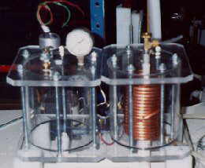
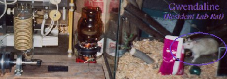

Large but better
view.
Large but better
view.

A previous unit, a dismal failure. Should have first tested copper against sodium hydroxide--the chemical reaction resulted in what looked like old fiberglass insulation in the water. The copper coils were intended for running cold water through, for cooling. Cutting slots in
the teflon rod that held the plate edges to the correct spacing.
Cutting slots in
the teflon rod that held the plate edges to the correct spacing. What eventually
became of this unit.
What eventually
became of this unit.  More proof that
"dangerous" is no joke.
More proof that
"dangerous" is no joke.
What lab is complete without a rat?